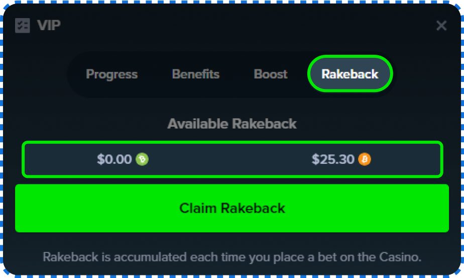
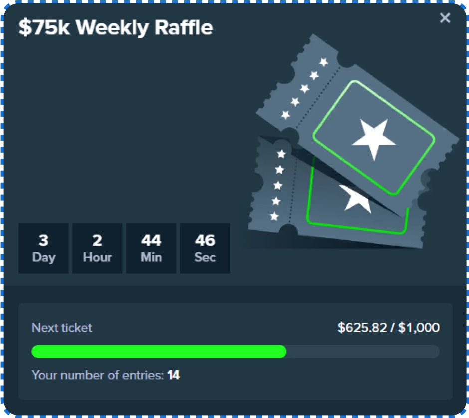

chevron_right
chevron_right
Programi VIP i Stake është shumë i plotë. Ai përbëhet nga 10 rangje.
Nga argjendi deri tek diamanti, do të përfitoni nga shumë bonuse dhe një kanal privat në Telegram.

Nëse dëshironi të mësoni më shumë mbi programin, konsultoni këtë artikull.

 chevron_right
chevron_right
Në Stake, rimbushja është një funksion që ju jep një shumë parash që mund ta kërkoni në intervale specifike.

Shumica e kohës, këto intervale janë një herë në 24 orë.
Pasi të bëni kërkesën e parë për rimbushjen, duhet të prisni 24 orë para se të bëhet e disponueshme, dhe kështu me radhë.
Kini parasysh se nuk mund të akumuloni rimbushjet, dhe nëse humbni një rimbushje, ajo humbet përgjithmonë.
 chevron_right
chevron_right
Në Stake, sa herë që vendosni një bast, do të merrni një pjesë të tij mbrapsht. Dhe sa herë që dëshironi, mund të rikuperoni këtë bonus shtesë!

Sa më shumë të bastoni, aq më shumë rritet rakeback-u juaj. Duke ngjitur rangjet VIP, përqindja e rakeback-ut rritet gjithashtu.
Rakeback është i disponueshëm nga rangu bronzi. Mund ta rikuperoni për të gjitha bastet tuaja para rangut VIP.
chevron_right
Përveç bonusit mujor, bonusi javor është një shpërblim i dhënë nga Stake për të shpërblyer lojtarët aktivë.
Kush është i eligjibël për këtë bonus?
Të gjithë lojtarët e rangut Bronzi janë të eligjibël, pa përjashtim.
Kur shpërndahet bonusi?
Çdo të shtunë në orën 14:30 (UTC+2).

Mund të ketë vonesa të vogla, por do t’ju dërgojmë linkun e bonusit sapo të jetë i disponueshëm.
 chevron_right
chevron_right
Për të përfituar nga bonusi mujor, duhet të keni një llogari valide në Stake dhe email-in të verifikuar.
Bonusi mujor është një shumë shtesë që jepet një herë në muaj për të gjithë lojtarët e eligjibël.
Ka shumë pak kufizime në depozita dhe bastet rreth bonusit mujor, mjafton të jeni lojtar aktiv.

Ashtu si me bonusin "Weekly", do t’ju dërgojmë linkun për bonusin "Monthly". Mund ta gjeni gjithashtu në email-et tuaja ose në Telegram-in zyrtar të Stake.
 chevron_right
chevron_right
Sfida në Stake krijohet nga streameri juaj.
Ato përbëhen nga realizimi i një challenge në një mënyrë lojë ose slot të caktuar.

Shembull: sfida është të arrini x1000 në plinko. Lojtari i parë që arrin këtë objektiv fiton çmimin e parashikuar.
 chevron_right
chevron_right
Kodet e Stake shpërndahen nga partnerët direkt gjatë live-ëve të tyre ose në rrjetet sociale.
Këto kode vlejnë vetëm një herë dhe kanë një numër të kufizuar përdorimesh.


Çdo javë, merrni pjesë në shorteun tonë për të fituar një pjesë nga $75,000.
Për çdo $1,000 të basteve të vendosura në kazino ose sporte, do të merrni automatikisht një tiketë për tombolan javore të Stake.
Fituesit shpallen drejtpërdrejt në stream-in e Eddie-t në orën 14:00 (GMT) çdo të shtunë.


Për të qenë i eligjibël për ofertat e mirëseardhjes në Stake, mjafton të keni një llogari të lidhur me partnerin tuaj dhe të jeni nën rangun Bronzi. Nëse të gjitha kushtet janë të plotësuara, kontaktoni bot-in këtu për të nisur procedurën!